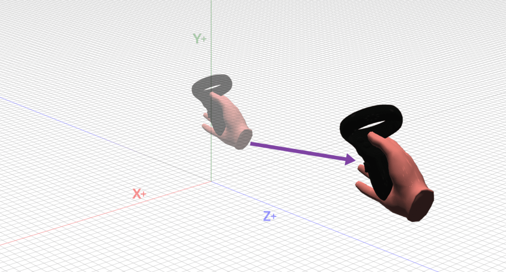

GeneNet VR: Large Biological Networks in Virtual Reality Using Inexpensive Hardware
Álvaro Martínez Fernández
Challenges visualizing large biological networks
- Information overload
- High dimensionality
- Interconnectivity
Challenges visualizing large biological networks in Virtual Reality
- Information overload
- Understand scalability limitations
- Performance requirements
Bioilogical networks
Nodes: Genes
Edges: Significant co-expression relationship
Other information: Clusters for module membership, weights, distance between nodes, etc.
CASE STUDY: MIxT
Methodology
- Build a prototype of a VR application
- Scalability and performance evaluation
- Interviews
Our solution
Implementation of GeneNet VR

Particle system to represent the nodes
- Native in Unity
- Control over the position of each of the nodes
- Easy to manipulate
- Data from external files
- Keep the information in a HashMap data type
Lines to represent the edges
- Line Renderer component from Unity
- It consists of 2 points in the 3D space
- Prefab asset
- Added and removed from the scene dynamically
Representation of clusters
- Using colors
- Genes that are significally co-expressed
Other visual elements
Interactions in GeneNet VR

Teleportation
Snap rotation
Network translation
Network scaling

Node selection